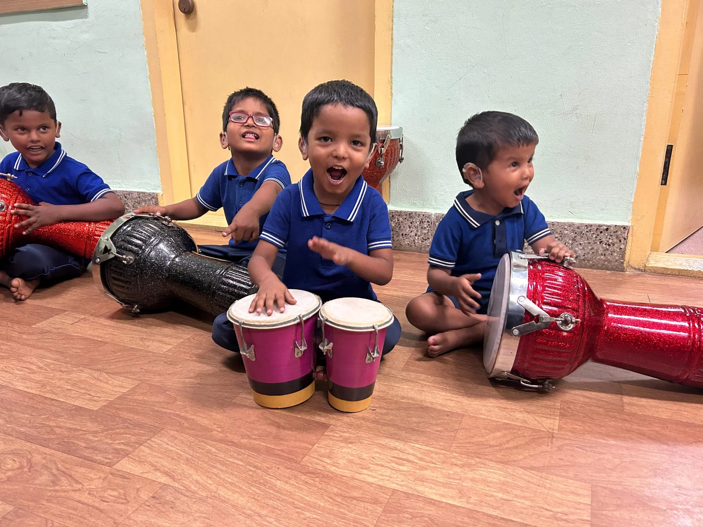
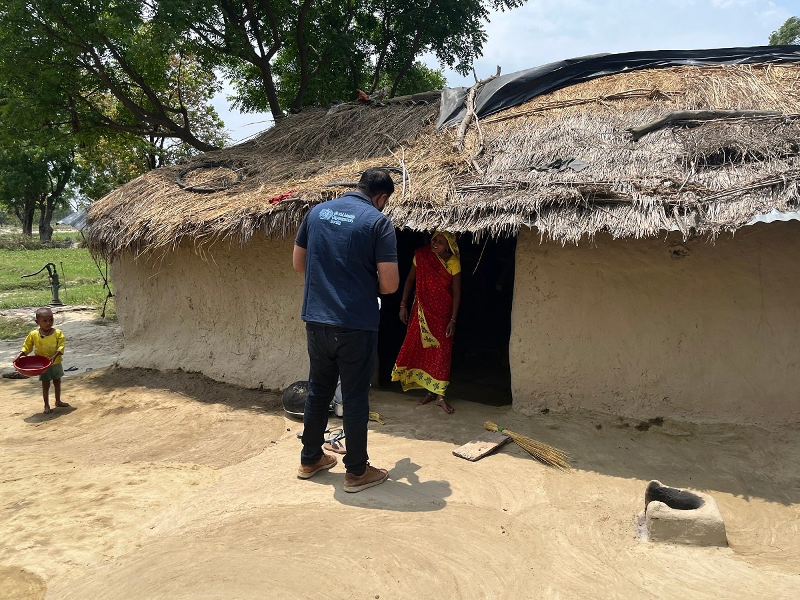
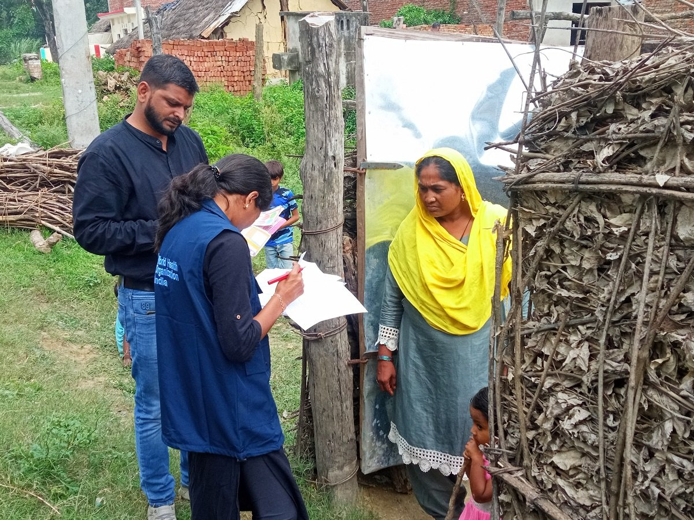
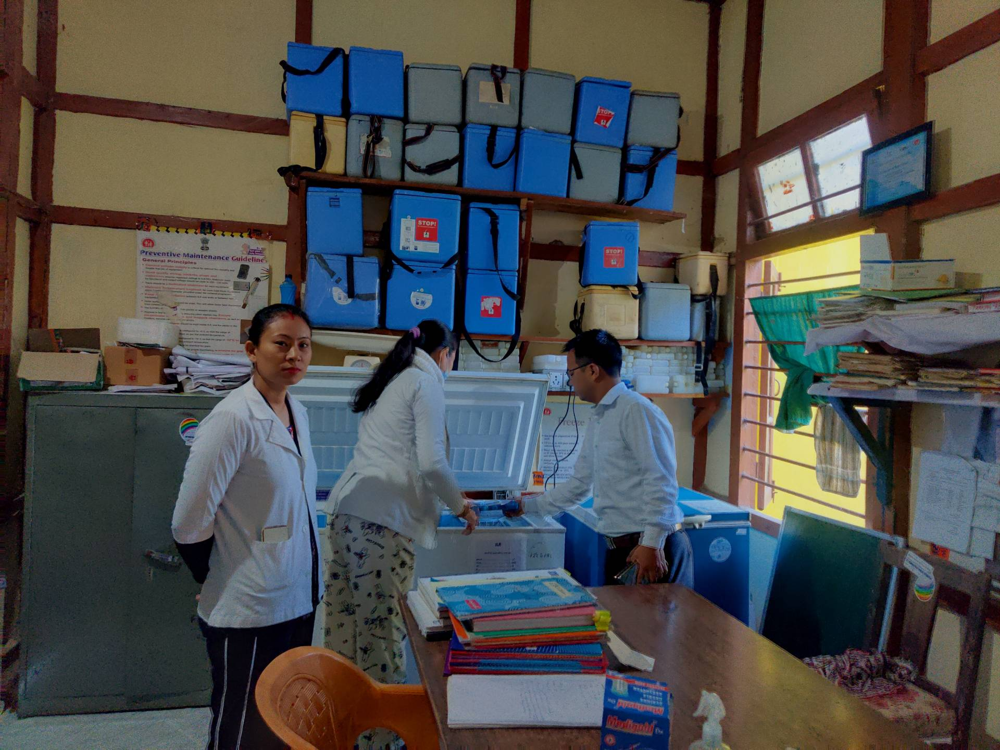

March 2024 | Mysuru, Karnataka
Creative expression through music for the holistic development of children with
communication disorders is part of the Special Use of Music for Educational Readiness and Upbuilding
(SUMERU) initiative of the Department of Special Education, All India Institute of Speech and Hearing in
Mysuru, Karnataka. (Photo: Anshu Shekhar Roy/ © WHO India)

December 2023 | Amethi, Uttar Pradesh
A WHO surveillance medical officer conducts house-to-house visits to survey the
immunization status of all children in Amethi district’s high-risk Shekhpura village, which has a high
number of ‘zero doser’ children and has recorded measles outbreaks. WHO-National Public Health Support
Network is supporting the Uttar Pradesh government in identifying and vaccinating unvaccinated and
under-vaccinated children in the district. (Photo: Hiralal / © WHO India)

December 2023 | Purbi Champaran, Bihar
A WHO-National Public Health Support Network team monitoring routine immunization
through house-to-house visits in the high-priority villages around Bankatwa Sub-Centre area bordering
Nepal. (Photo: Haseen Khan / © WHO India)

January 2024 | Longding, Arunachal Pradesh
Dr T Wangshu (extreme right) and auxiliary nurse midwives Ms Lipi Pegu and Ms Jimi
Mech carry vaccines and essential medicines from Community Health Centre Kanubari, Longding district, to
deliver health services to communities living in remote and hard-to-reach areas. WHO provides technical
and monitoring support to Government of India in strengthening routine immunization and primary health
services. (Photo: Sanchita Sharma / © WHO India)